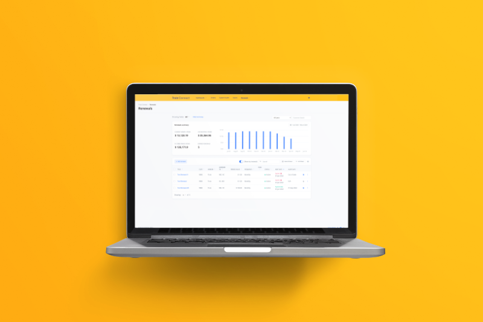
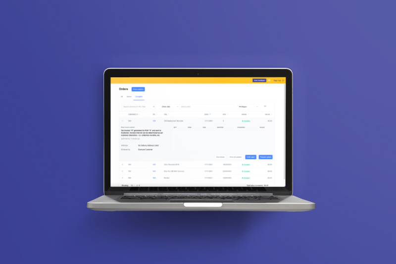

I’m Hayden Chapple, a Product Designer and Developer with a creative heart and a practical mind.
More about me >
My Stuff
Design

QGov Scheduling Automation
I designed an automated scheduling system to replace a manual, Excel-based workflow, improving scalability, visibility, and support for multiple device types while preserving the flexibility users depended on. The project revealed the importance of early discovery and system-aware design, as unclear acceptance criteria and incorrect initial assumptions led to rework and highlighted the need for more interconnected data models and user-tested interfaces.
Design

QGov Legacy Modernisation
I led the like-for-like modernisation of a legacy desktop application, redesigning it to be more reliable and maintainable while preserving familiar workflows and user mental models. By deeply studying the undocumented legacy system and applying a breadth-first design approach aligned with complex data migration, the project delivered a consistent, confidence-building experience that clients adopted positively.
Design

Truis Connect Renewals Redesign
I redesigned the Truis Connect Renewals page to restore trust in inaccurate data and reposition it as a lead-generation tool for IT managers, working across UX/UI design and front-end development due to limited resources. Through structured research, iterative design, and ongoing internal testing, the solution improved user agency, information clarity, and data validation while establishing a stronger design foundation for future iterations.
Design

Truis Connect Orders Redesign
I led the end-to-end redesign of the Truis Connect Renewals page to rebuild trust in inaccurate data and turn the feature into a stronger lead-generation tool, balancing UX design with front-end development under tight resourcing constraints. Through user research, iterative design, and close collaboration with engineering, the solution improved clarity, user control, and data validation while laying a more confident foundation for future optimisation.